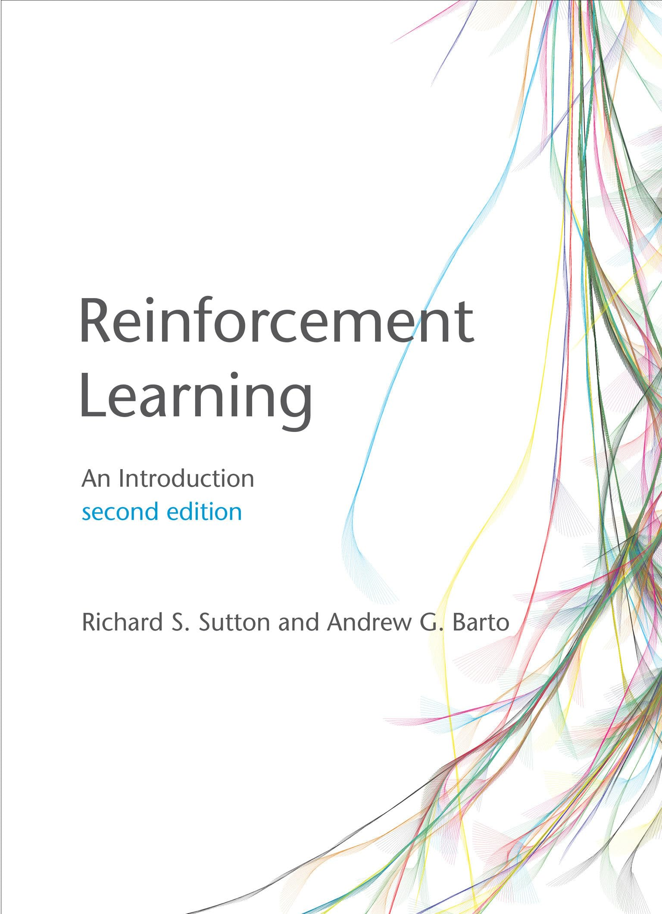
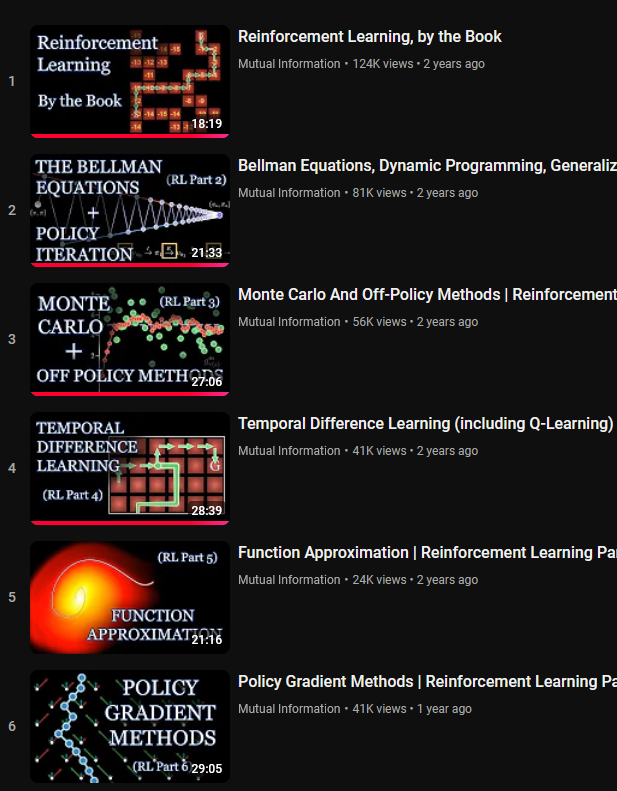

MDP
\[\text{max}_{\pi} \text{E}_{\pi}[G_{t}]\]
\[v_{\pi}(s) = \text{E}_{\pi}[G_{t}|S_{t} = s]\]
\[q_{\pi}(s,a) = \text{E}_{\pi}[G_{t}|S_{t} = s, A_{t} = a]\]
connect all state values
\[\begin{array}{rcl} v_{\pi}(s^{i}) & = & \text{E}_{\pi}[G_{t}|s^{i}] \\ ~ & = & \sum_{\{a\}} \pi(a|s^{i}) \cdot q(s^{i},a) \\ ~ & = & \sum_{\{a\}} \pi(a|s^{i}) \cdot \text{E}_{\pi}[G_{t}|s^{i}, a] \\ \end{array}\]
For any optimal \(\pi_{*}\), \(\forall s \in S\), \(\forall a \in A\)
\[\begin{array}{rcl} v_{*}(s) & = & \text{max}_{a} q_{*}(s,a) \\ q_{*}(s,a) & = & \sum_{s,r} p(s'r|s,a)[r + \gamma v_{*}(s')] \\ \end{array}\]
We do not know \(p(s'r|s,a)\)
\[\pi \approx \pi_{*}\]
\[\text{E}_{\pi}[G_{t}|S_{t} = s] \approx \frac{1}{C(s)}\sum_{m=1}^{M}\sum_{\tau=0}^{T_{m}-1} I(s_{\tau}^{m} = s)g_{\tau}^{m}\] * step size \(\alpha\) for update rule
\[V(s_{t}^{m}) \leftarrow V(s_{t}^{m}) + \alpha\left(g_{t}^{m} - V(s_{t}^{m})\right)\]
we must explroe all state-action pairs
we must exploit known high-value pairs
MCMC solving blackjack game
image credit: Mutual Information
10 million games played
Markov Reward Process: A Markov decision process, but w/o actions
MCMC requires an episode to complete before updating
but what if an episode is long?
Replace \(g_{t}^{m}\) with
\[g_{t:t+n}^{m} = r_{t+1}^{m} + \gamma r_{t+2}^{m} + \cdots + \gamma^{n-1} r_{t+n}^{m} + \gamma_{n}V(s_{t+n}^{m})\]
updates are applied during the episoes with an n-step delay
Compared to MC, TD has
\[r_{t+1}^{m} + \gamma \text{max}_{a} Q(s_{t+1}^{m},a)\]
updates \(Q\) after each sarsa tuple (each n-step delay)
\[v_{\pi}(s) \approx \hat{v}(s,w), \quad w \in \mathbb{R}^{d}\] * caution: updating \(w\) updates many values of \(s\)
not just the “visited states”
\[\text{VE}(w) = \sum_{s \in S} \mu(s)\left[v_{\pi}(s) - \hat{v}(s,w)\right]^{2}\]
\[w \leftarrow w + \alpha\left[U_{t} - \hat{v}(S_{t},w)\right] \nabla \hat{v}(S_{t},w)\]
To find target \(U_{t}\)